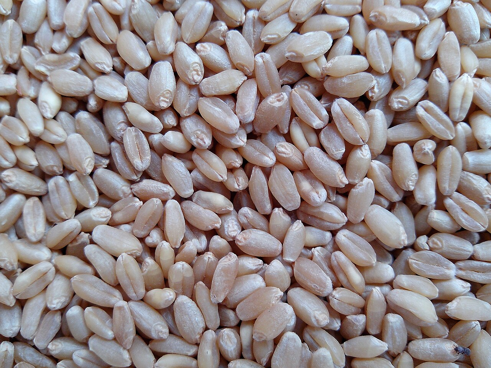

细胞中的无机物
本期导读
自由水 · 结合水 · 无机盐

视频原话 · 导读3 句
- 同学们好！这节课梳理人教版必修一第二章第二节——细胞中的无机物。7.1s
- 高考常考自由水与结合水、无机盐的功能，以及验证必需元素的实验设计。7.2s
- 我们按七个考点梳理，每个考点都讲清楚怎么考、怎么做。5.6s
水的含量特点01#
水是细胞中含量最多的化合物，一般占细胞鲜重的 70%～90%
不同生物
水生生物 ＞ 陆生生物
水母的含水量可达 97%
同一生物
幼儿 ＞ 成年人
代谢旺盛的器官含水量高
代谢旺盛的器官含水量高
解题方法
比较含水量：一般代谢越旺盛，含水量越高
视频原话4 句
- 考点一，水的含量特点。水是细胞中含量最多的化合物，一般占细胞鲜重的70%～90%。10.1s
- 不同生物含水量不同：一般水生生物多于陆生生物，水母的含水量可达97%。8.4s
- 同一生物的不同时期、不同器官也不同：幼儿多于成年人，代谢旺盛的器官含水量高。8.0s
- 考法：比较不同生物、不同器官含水量的高低。解题方法：一般代谢越旺盛，含水量越高。9.3s
水是良好的溶剂02#
- 1极性分子带电荷的分子或离子易与水结合 → 良好的溶剂
- 2氢键不断断裂又形成 → 常温下呈液态，能流动
- 3氢键比热容较高 → 温度不易改变，利于维持稳定
易错
良好溶剂 ← 极性；比热容高、能流动 ← 氢键
视频原话4 句
- 考点二，水为什么是良好的溶剂。水分子是极性分子，带电荷的分子或离子都容易与水结合。9.7s
- 水分子之间会形成氢键，氢键不断断裂又不断形成，使水在常温下呈液体状态，具有流动性。9.7s
- 氢键还使水具有较高的比热容，水的温度不容易改变，有利于维持生命系统的稳定。7.8s
- 易错：水是良好溶剂，靠的是极性；水的比热容高、能流动，靠的是氢键，不要张冠李戴。8.9s
自由水与结合水03#
自由水（绝大部分）
以游离形式存在，可以自由流动
细胞内良好的溶剂
参与生物化学反应、提供液体环境
运送营养物质和代谢废物
结合水（少部分）
与细胞内其他物质相结合
失去流动性和溶解性
是细胞结构的重要组成部分
⇄
相互转化易错
只有自由水能作溶剂、参与反应和运输；结合水是细胞结构的组成成分
视频原话5 句
- 考点三，自由水与结合水。细胞中绝大部分的水以游离的形式存在，可以自由流动，叫作自由水。9.6s
- 自由水是细胞内良好的溶剂，参与许多生物化学反应，还能运送营养物质和代谢废物。8.4s
- 一部分水与细胞内的其他物质相结合，叫作结合水，是细胞结构的重要组成部分。7.8s
- 在一定条件下，自由水和结合水可以相互转化。4.9s
- 易错：只有自由水能作溶剂、参与反应和运输；结合水失去了流动性和溶解性，是细胞结构的组成成分。10.1s
比值与代谢抗逆04#
比值高（自由水多）
细胞代谢旺盛，如萌发的种子
比值低（结合水多）
代谢慢，抗寒、抗旱等抗逆性强
- 1越冬冬季来临，冬小麦结合水比例升高，抗寒能力增强
- 2晒干种子晒干失去自由水：代谢减弱，便于储存，仍有活性
- 3烘烤种子烘烤失去结合水：细胞结构被破坏，失去活性
解题方法
代谢旺盛看自由水，抗逆性强看结合水
视频原话5 句
- 考点四，自由水与结合水的比值。比值越高，细胞代谢越旺盛。7.0s
- 比值越低，代谢越慢，但抗寒、抗旱等抗逆性越强。5.6s
- 比如冬季来临，冬小麦细胞中结合水的比例逐渐升高，抗寒能力增强。7.1s
- 种子晒干时失去的主要是自由水，代谢减弱，便于储存；种子烘烤时失去结合水，就失去活性了。9.9s
- 考法：结合种子萌发、储存和越冬考比值的变化。解题方法：代谢旺盛看自由水，抗逆性强看结合水。10.8s
无机盐组成化合物05#
细胞中大多数无机盐以离子的形式存在
| 元素 | 组成的化合物 | 缺乏时 |
|---|---|---|
| Mg | 叶绿素 | 叶片发黄 |
| Fe | 血红素（血红蛋白） | 缺铁性贫血 |
| I | 甲状腺激素 | 地方性甲状腺肿 |
| P | 磷脂、核酸、ATP 等 | 影响膜结构和遗传物质的合成 |
解题方法
先说它组成了哪种化合物，再推缺乏的后果
视频原话4 句
- 考点五，无机盐的存在形式和功能。细胞中大多数无机盐以离子的形式存在。7.8s
- 有些无机盐是复杂化合物的重要组成成分：Mg是叶绿素的组成成分，Fe是血红素的组成成分。9.1s
- I是合成甲状腺激素的原料；P是磷脂、核酸、ATP等的组成元素。7.1s
- 考法：缺Mg叶片发黄，缺Fe会贫血，缺I易患地方性甲状腺肿。解题方法：先说它组成了哪种化合物，再推缺乏的后果。12.3s
无机盐维持生命06#
血液中 Ca2+
含量太低 → 抽搐
含量太高 → 肌无力
Na+ 缺乏
神经、肌肉细胞兴奋性降低
引发肌肉酸痛、无力等
酸碱平衡和渗透压
维持细胞的酸碱平衡和渗透压
生理盐水：质量分数 0.9% 的 NaCl 溶液
易错
无机盐不能为细胞提供能量；大量出汗后应补充淡盐水
视频原话4 句
- 考点六，无机盐对维持生命活动的作用。哺乳动物血液中Ca2+含量太低，会出现抽搐等症状。9.6s
- 人体内Na+缺乏，会引起神经、肌肉细胞的兴奋性降低，最终引发肌肉酸痛、无力等。8.6s
- 无机盐还能维持细胞的酸碱平衡和渗透压，比如生理盐水是质量分数为0.9%的NaCl溶液。9.7s
- 易错：无机盐不能为细胞提供能量；大量出汗后，要补充的是淡盐水，而不只是水。8.2s
验证必需元素07#
对照组
- 长势相同的幼苗
- →完全培养液
- →正常生长
实验组
- 长势相同的幼苗
- →缺镁培养液
- →叶片发黄
- →补充镁
- →恢复正常
“缺素—补素”：实验组前后自身对照（二次对照）
解题方法
自变量是有无这种无机盐；对照组用完全培养液，不能用土壤（土壤中本来就有该元素）
视频原话4 句
- 考点七，验证某种无机盐是植物生长所必需的。以镁为例：完全培养液为对照组，缺镁培养液为实验组。10.8s
- 把长势相同的幼苗分别放入两组中培养，结果缺镁组的幼苗叶片发黄。7.0s
- 还要做二次对照：向缺镁组中补充镁，症状消失、恢复正常，才能说明镁是必需的。8.4s
- 解题方法：自变量是有无这种无机盐；对照组用完全培养液，不能用土壤；再用“缺素—补素”前后对照增强说服力。10.7s
易错速查✓
先自己判断，再点按钮查看对错与解析。
- 1结合水是细胞内的良好溶剂说法错误：自由水才是细胞内的良好溶剂
- 2自由水与结合水比值越高，抗寒能力越强说法错误：比值越高代谢越旺盛，抗逆性越弱
- 3晒干的种子失去的主要是自由水说法正确。
- 4Mg是叶绿素的组成成分，缺Mg叶片发黄说法正确。
- 5无机盐能为细胞的生命活动提供能量说法错误：无机盐不能为细胞提供能量
- 6验证Mg是必需元素，对照组用土壤栽培说法错误：对照组用完全培养液
代谢看自由水，抗逆看结合水！
视频原话 · 易错速查5 句
- 最后，用六道判断题检验一下。3.6s
- 判断一？错，自由水才是良好溶剂。判断二？错，比值越高，代谢越旺盛，抗逆性越弱。10.6s
- 判断三？对。判断四？对。4.7s
- 判断五？错，无机盐不能提供能量。判断六？错，对照组要用完全培养液。8.9s
- 七个考点串成一条线：代谢看自由水，抗逆看结合水，无机盐看组成和功能。我们下期再见！9.4s
图片来源
图片来源：Wikimedia Commons —— Thamizhpparithi Maari《A close-up image of wheat grains》CC BY-SA 4.0
Photo: Thamizhpparithi Maari, CC BY-SA 4.0